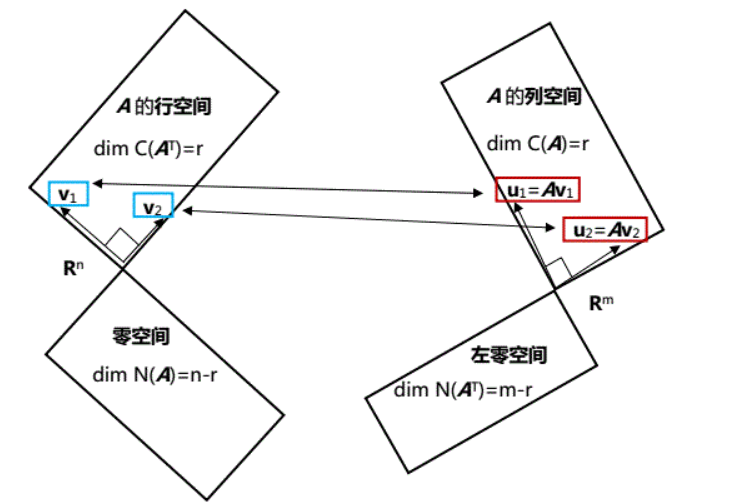
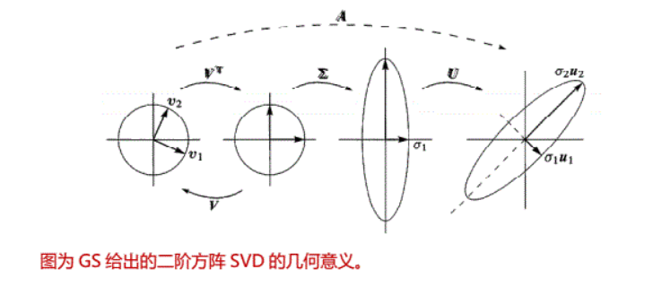

奇异值分解（SVD）
Singular value decomposition
奇异值分解，简称$SVD$。SVD分解对所有矩阵都适用。这是矩阵最终也是最好的分解，任意矩阵可分解为$A=U\Sigma V^T$，分解的结果为正交矩阵$U$，对角矩阵$\Sigma$和正交矩阵$V$.
如果矩阵$A$是正定矩阵，它的奇异值分解就是$A=Q\Lambda Q^T$，一个正交矩阵$Q$就可以满足分解，而不需要两个。而对于可对角话的矩阵有$A=S\Lambda S^{-1}$，但是特征向量矩阵$S$并不是正交矩阵，而SVD中的$U$和$V$都是正交矩阵。
实现
可以将矩阵$A$视为一种线性变换操作，将其行空间中的一个向量$v_1$，变为其列空间中的向量$u_1=Av_1$。奇异值分解就是要在行空间中寻找一组正交基，将其通过矩阵$A$线性变换生成列空间中的一组正交基$Av_i=\sigma_i u_i$

找出矩阵$A$行空间中的正交基很容易，Gram-Schmidt正交化过程就可以实现。但是随便的一组正交基经过矩阵$A$变换得到的向量并不一定正交，因此满足此要求的行空间的正交基非常特殊。而矩阵$A$零空间的向量所对应的是矩阵
矩阵语言实现这一过程
问题的核心就是找到行空间中一组特殊的正交基：
$A\left[\begin{matrix}v_1&v_2&\cdots &v_r \end
{matrix} \right]=\left[\begin{matrix}\sigma-1 u_1&\sigma_2 u_2&\cdots &\sigma_r u_r \end
{matrix} \right]$
$\left[\begin{matrix}u_1&u_2&\cdots &u_r \end
{matrix} \right] \left[\begin{matrix}
\sigma_1& & & \\
&\sigma_2& & \\
& &\ddots & \\
& & &\sigma_r
\end
{matrix} \right]$
如果加入零空间的部分，等式就变成了$AV=U\Sigma$，其中零空间对应的正交基$v_{r+1},\cdots,v_n$，经过线性变换得到$Av=0$，对应$\Sigma$矩阵中对角线最后的特征值$\sigma_{r+1}=\sigma_{r+2}=\cdots=0$。
在等式$AV=U\Sigma$量测右乘$V^{-1}$得到$A=U\Sigma V^{-1}=U\Sigma V^T$。
现在的问题就是怎么找到符号要求的向量$v_i$和$u_i$。
为零得到这两个正交矩阵，考虑首先解决其中一个，在等式$A=U\Sigma V^T$两侧分别乘上等式$A^T=V\Sigma^TU^T$两侧的项：
$$A^TA=V\Sigma^{T} U^{T} U\Sigma V^{T}
=V\Sigma^T \Sigma V^T$$
$$=V\left[ \begin{matrix}
\sigma^2_{1}& & & \\
&\sigma^2_{2}& & \\
& &\ddots& \\
& & &\sigma^2_{r}
\end{matrix}\right]$$
上式其实是正定矩阵$A^TA$的正交分解，$v_i$就是矩阵$A^TA$的特征向量，$\sigma^2_{i}$就是矩阵$A^TA$的特征值，奇异值$\sigma_i$要取证平方根
。用同样的办法也可以求的$U$，它的列向量就是矩阵$AA^T$的特征向量。
例1：矩阵$A=\left[\begin{matrix}4&4\\
-3&3 \end{matrix}\right]$，求其SVD分解。
矩阵为可逆矩阵，秩为2，则需要在行空间中求得$v_1，v_2$，列空间中求得$u_1,u_2$，以及伸缩因子$\sigma_1,\sigma_2$。
计算得$A^TA=\left[ \begin{matrix}
4&-3\\
4&3
\end{matrix} \right] \left[ \begin{matrix}
4&4\\
-3&3
\end{matrix} \right]=\left[ \begin{matrix}
25&7\\
7&25
\end{matrix} \right]$它的特征向量为
$\left[ \begin{matrix}
1\\
1
\end{matrix} \right]$和$\left[ \begin{matrix}
1\\
-1
\end{matrix} \right]$。标准化得到
$v_1=\left[ \begin{matrix}
\frac{1}{\sqrt{2}}\\
\frac{1}{\sqrt{2}}
\end{matrix} \right]$
$v_1=\left[ \begin{matrix}
\frac{1}{\sqrt{2}}\\
-\frac{1}{\sqrt{2}}
\end{matrix} \right]$
求得$\sigma^2_1=32$,$\sigma^2_2=8$.
求$U$的过程可以利用矩阵$AA^T$
其余步骤和求$V$相似。
我们将求得的矩阵$\left[ \begin{matrix}
1&0\\
0&1
\end{matrix} \right]$作为矩阵$U$代入，会产生错误$U\Sigma V^T=\left[ \begin{matrix}
4&4\\
3&-3
\end{matrix} \right]$
因为确定特征向量的过程中，特征向量反向仍然符合要求，通过现在的方法无法确认向量的符号，但是一旦我们确认$v$的方向后，$u$的方向也就随之确定，将$v$代入$AV=V\Sigma$计算$u$可以避免这种问题，$u$和$v$直接的符号联系在进行$AA^T$的计算时被切断了，而用$AV=U\Sigma$可以避免此问题。
例子2：奇异矩阵$A=\left[ \begin{matrix}
4&3\\
8&6
\end{matrix} \right]$,求其SVD分解。
矩阵的秩为1，行空间和列空间都为1维的。行空间和零空间可以找到一组正交基转换得到列空间和左零空间的一组正交基。
很容易确定$v_1=\left[ \begin{matrix}
0.8\\
0.6
\end{matrix} \right]$，
$v_2=\left[ \begin{matrix}
0.6\\
-0.8
\end{matrix} \right]$，
$u_1=\frac{1}{\sqrt(5)}\left[ \begin{matrix}
1\\
2
\end{matrix} \right]$
$u_2=\frac{1}{\sqrt(5)}\left[ \begin{matrix}
2\\
-1
\end{matrix} \right]$
$A^TA=\left[ \begin{matrix}
4&8\\
3&6
\end{matrix} \right]
\left[ \begin{matrix}
4&3\\
8&6
\end{matrix} \right]=
\left[ \begin{matrix}
80&60\\
60&45
\end{matrix} \right]$，秩1矩阵，很容易求得$\sigma^2_1=125,\sigma^2_2=0$。
矩阵的SVD分解为:$A=\frac{1}{\sqrt(5)}\left[ \begin{matrix}
1&2\\
2&-1
\end{matrix} \right]
\left[ \begin{matrix}
\sqrt(125)&0\\
0&0
\end{matrix} \right]
\left[ \begin{matrix}
0.8&0.6\\
0.6&-0.8
\end{matrix} \right]$
做奇异值分解就是在矩阵的四个子空间中寻找到合适的基：
$v_1,v_2,\cdots,v_r$为行空间标准正交基。
$u_1,u_2,\cdots,u_r$为列空间标准正交基。
$v_{r+1},v_{r+2},\cdots,v_n$为零空间标准正交基。
$u_{r+1},u_{r+2},\cdots,u_m$为左零空间标准正交基。
奇异值分解在最小二乘法问题中有重要应用，因为在实际问题中常碰到矩阵$A$不是列满秩的状态，因此$A^TA$不可逆，无法用之前的方法求最优解。即使再列满秩的情况当矩阵是超大型矩阵时，$A^TA$的计算量太大，用奇异值分解的办法会降低计算量。

奇异值分解的应用
奇异值分解去掉小的奇异值部分，可以减少计算量和去掉噪声